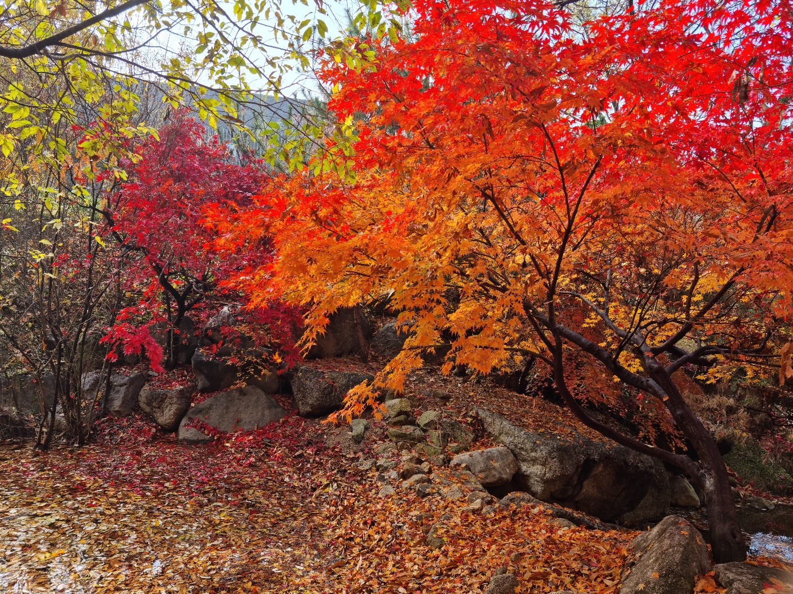
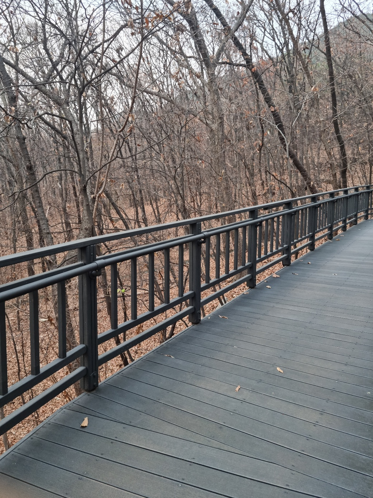
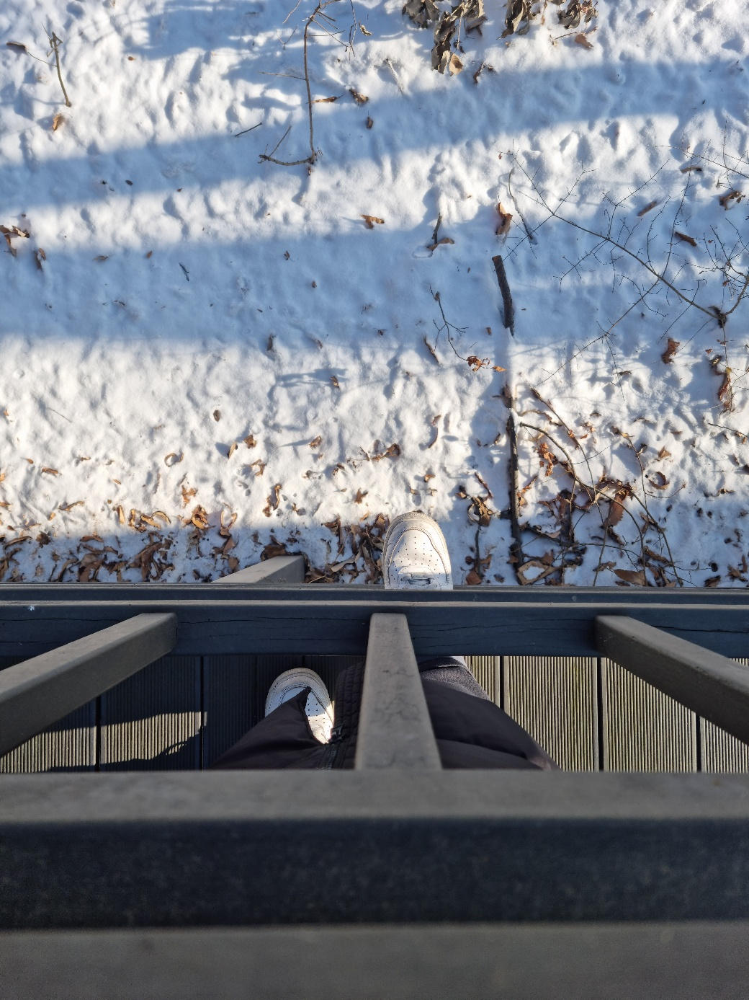
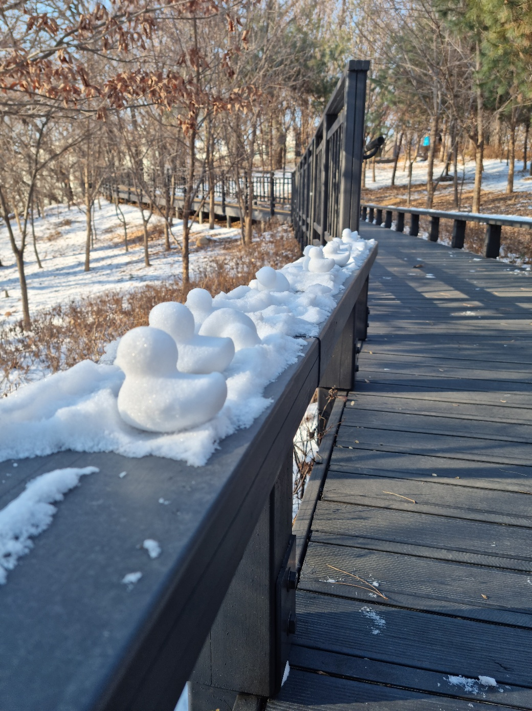

 가을에 집 주변 나비정원이라는 곳을 갔었는데 단풍이 너무 이쁘게 피었더라고요~ 그래서 사진 한 컷 찍었습니다~!
가을에 집 주변 나비정원이라는 곳을 갔었는데 단풍이 너무 이쁘게 피었더라고요~ 그래서 사진 한 컷 찍었습니다~!

또 다른 늦가을 나비정원 사진인데 잎파리가 다 떨어져서 을씨년 스러운 분위기가 나네요..

겨울에 눈이 하얗게 덮여있어서 기념으로 찍은 사진입니다.

누군가 작은 눈오리를 만들고갔네요